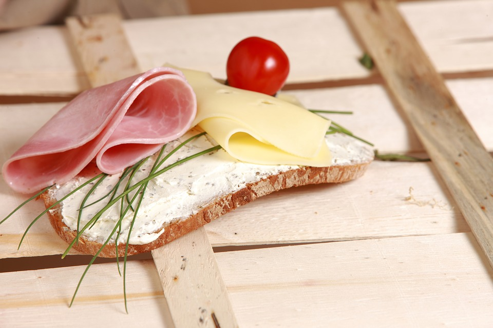
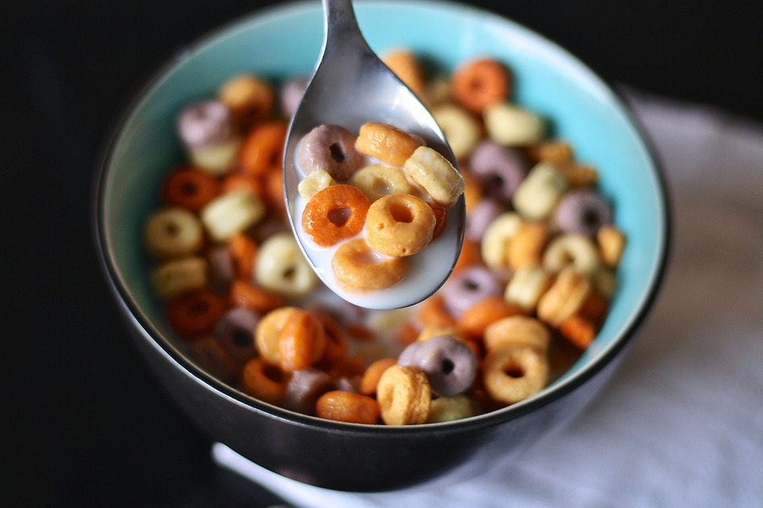

<div id="carousel-example-generic" class="carousel slide" data-ride="carousel">
  <ol class="carousel-indicators">
    <li  data-target="#carousel-example-generic" data-slide-to="0" class="active"></li>
    <li  data-target="#carousel-example-generic" data-slide-to="1"></li>
    <li  data-target="#carousel-example-generic" data-slide-to="2"></li>
  </ol>
  <div class="carousel-inner" role="listbox">
    <div class="item active">
      
      <div class="carousel-caption">
        早餐肉加面包清新组合给你一个不一样的早晨
      </div>
    </div>
    <div class="item">
      
      <div class="carousel-caption">
        西式早餐的十个优点你知不知道？
      </div>
    </div>
    <div class="item">
      
      <div class="carousel-caption">
        如何能提高早餐的质量，让你的早餐充满能量
      </div>
    </div>
  </div>
  <a class="left carousel-control" href="#carousel-example-generic" role="button" data-slide="prev">
    <span class="glyphicon glyphicon-chevron-left"></span>
    <span class="sr-only">Previous</span>
  </a>
  <a class="right carousel-control" href="#carousel-example-generic" role="button" data-slide="next">
    <span class="glyphicon glyphicon-chevron-right"></span>
    <span class="sr-only">Next</span>
  </a>
</div>
